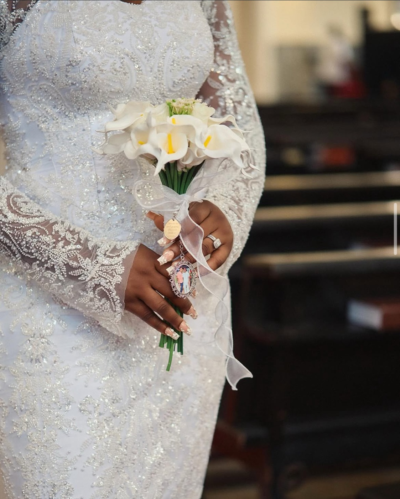
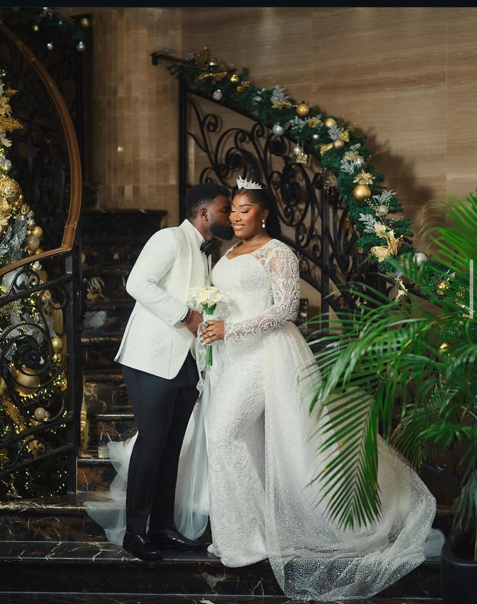
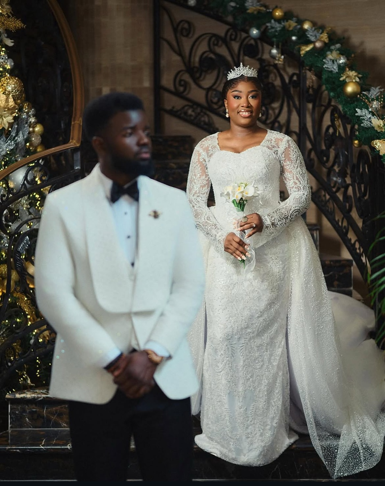
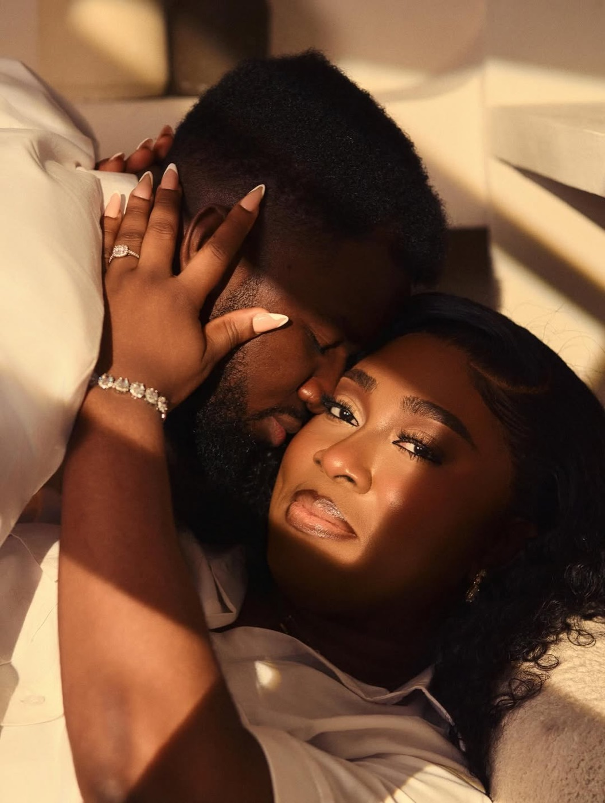

Two ceremonies, two completely different moods — the richness of being an Igbo bride, then something softer and more classic.
From the first consultation we built a wardrobe around her heritage and her love story: a richly beaded burgundy traditional crowned with gele, and a long-sleeve beaded lace gown with a cathedral veil for the white wedding — eight looks in total, each created for a distinct moment of the day.






Her DearLover story
When I started planning my wedding, I knew I wanted my traditional and white wedding looks to feel special in completely different ways. The traditional wedding was an opportunity to embrace the richness and beauty of being an Igbo bride, while the white wedding was softer and more classic. I loved the process of seeing both sides of my bridal style come together. Working with DearLover helped bring that vision to life and made getting ready for such important moments feel even more exciting.
What did you want your wedding wardrobe to make you feel?
I wanted to feel beautiful, confident and comfortable in every look. It was important to me that I didn't feel like I was wearing a costume. I wanted everything to feel natural to me while still making me feel special enough for such an important day. Most importantly, I wanted to look back at my wedding pictures and love what I saw.
What was your favourite look?
I loved both looks for completely different reasons. There was something about the full transformation — the outfit, accessories and all the little details coming together — that made the moment feel very real. I remember looking at myself and thinking, "wow, I'm actually a bride."
What did DearLover mean to your wedding experience?
DearLover was a part of helping me feel ready. Your wedding day moves so quickly, and there are so many things happening at once. Having people around you who understand how important those moments are makes such a difference. It wasn't just about putting looks together — it was about helping me step into each moment feeling confident, beautiful and ready to enjoy it.